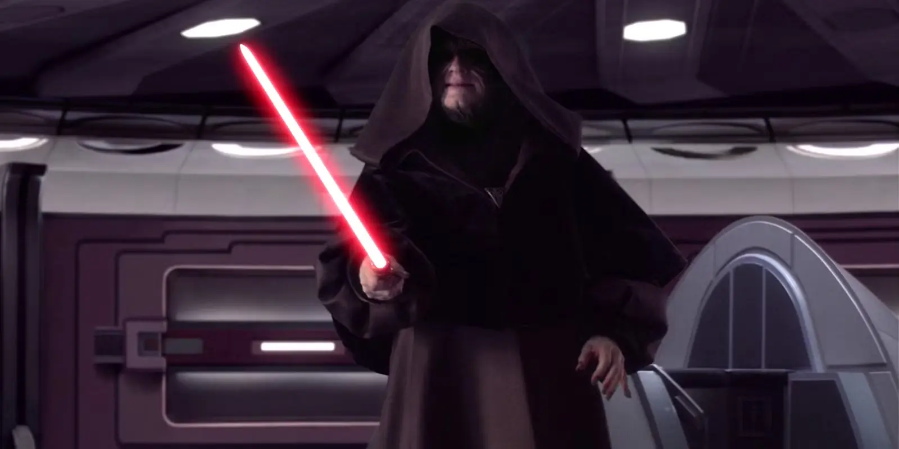

Darth Sidious
Darth Sidious was the secretive and powerful leader of the Sith, who orchestrated the rise of the Galactic Empire and the fall of the Republic. He was known for his cunning mind and his ability to manipulate others for his own gain.